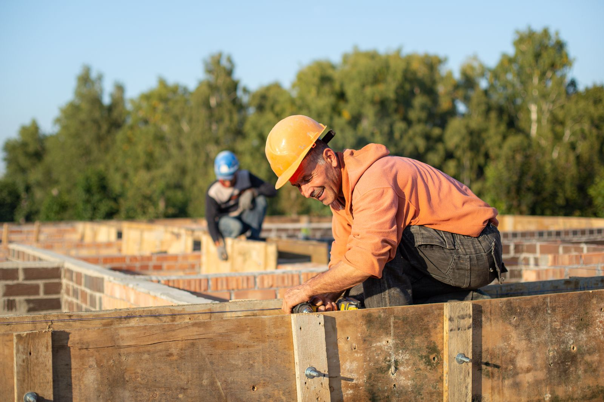
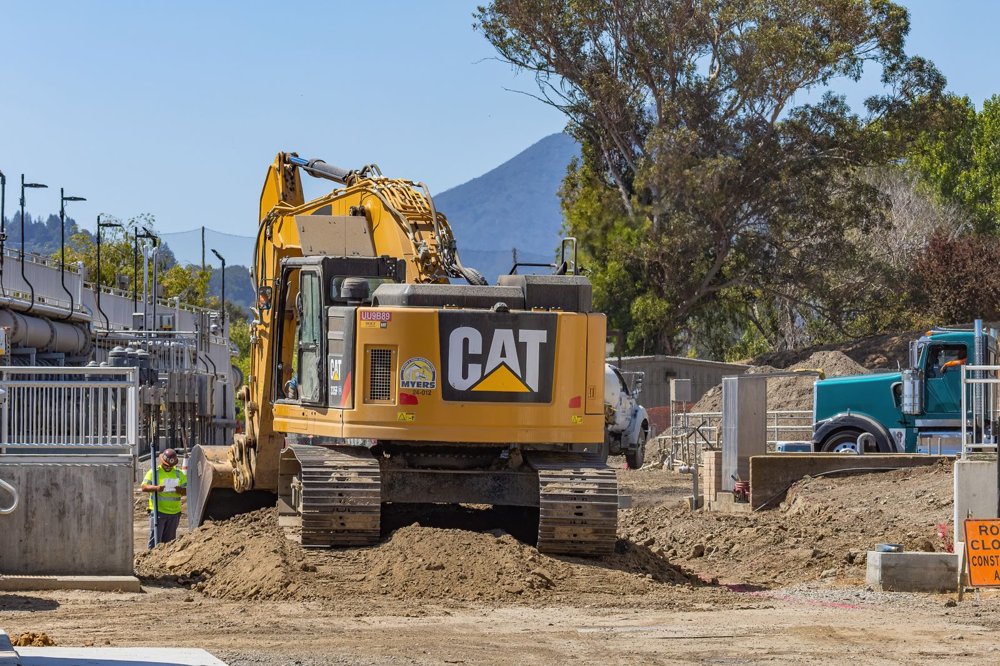
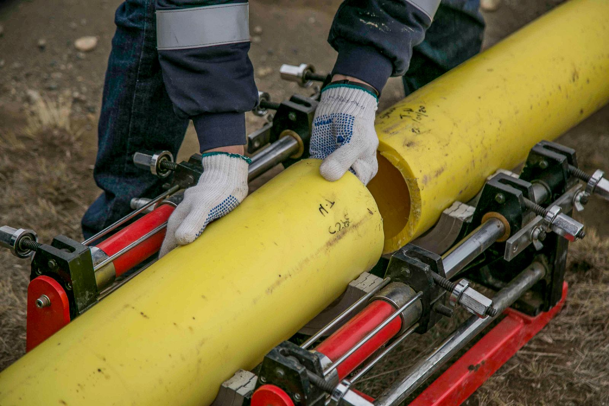
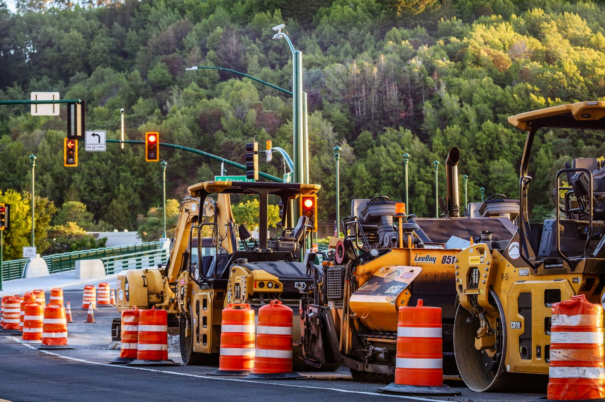
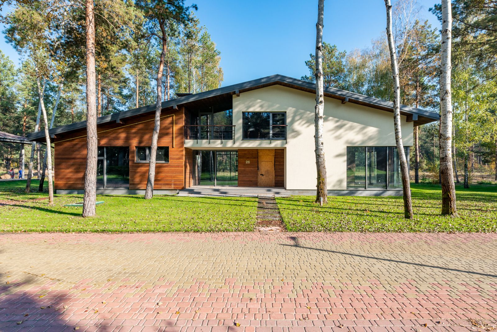
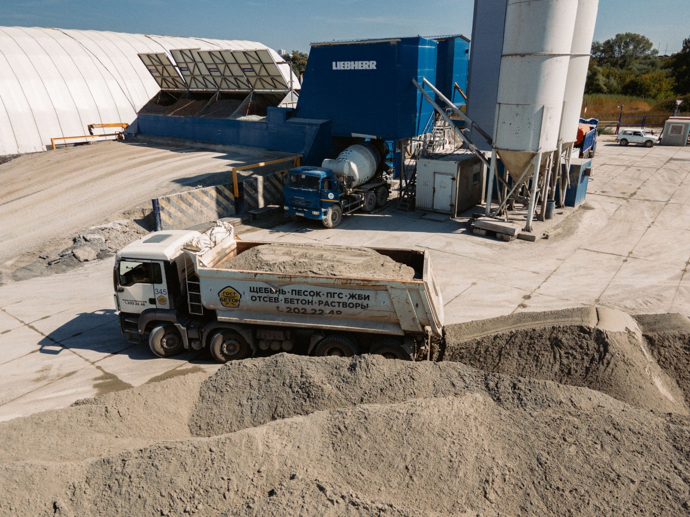
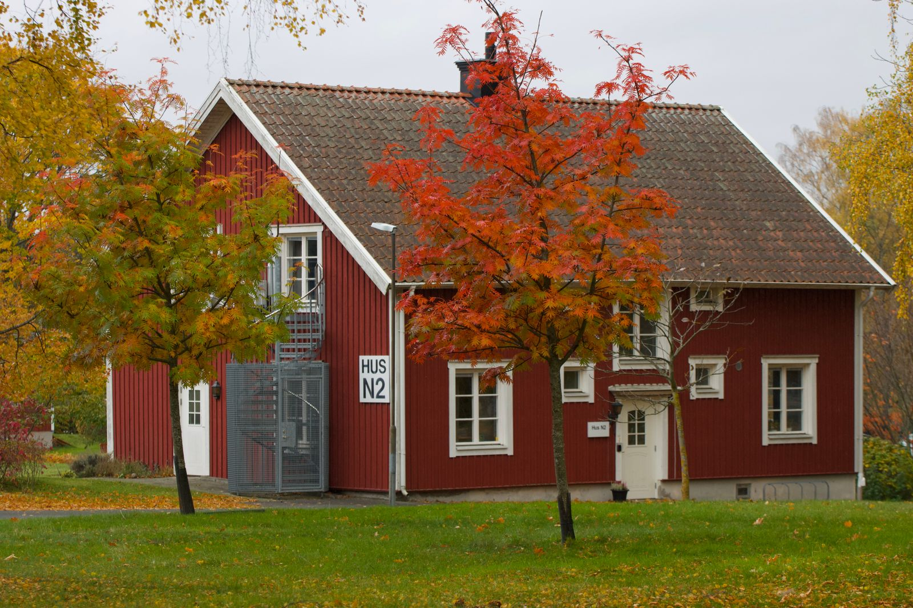
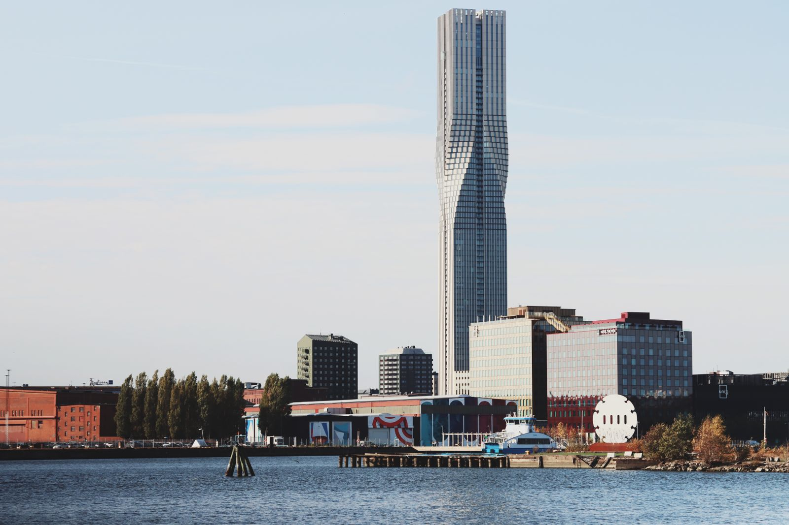
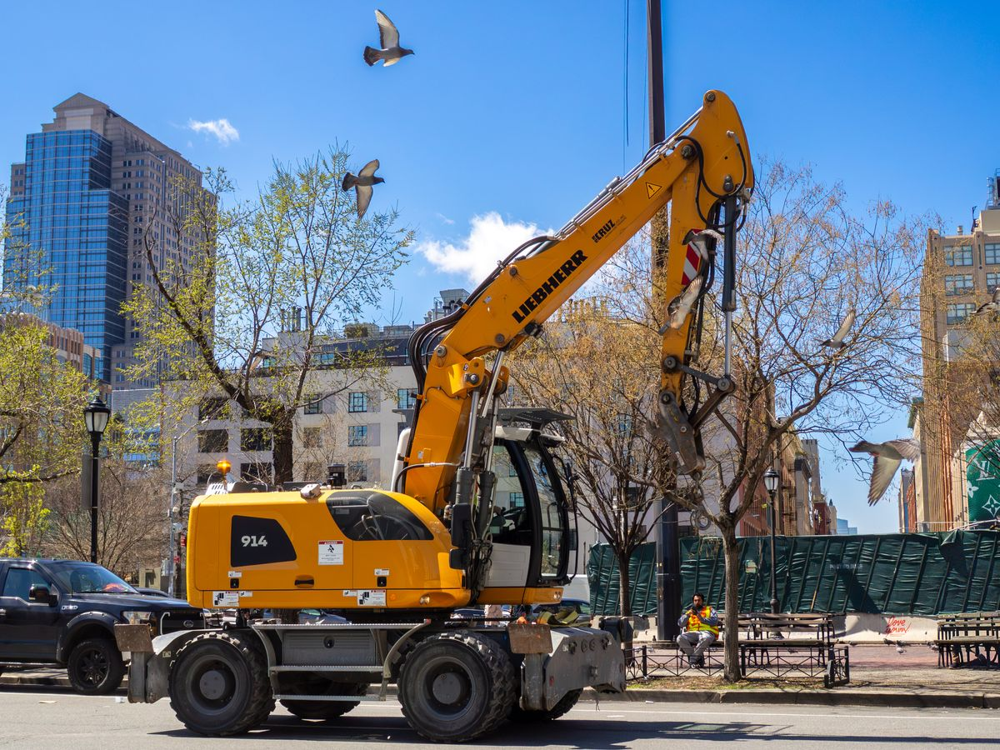

Vi lägger grunden för det du ska bygga
Små och stora markentreprenader på Orust och i Göteborgsregionen – med egen maskinpark sedan 1984.
Det här gör vi

GrundläggningHusgrunder för villor, garage, förskolor och flerbostadshus
Schakt och sprängningRivning, trädfällning, schakt, sprängning och terrassering
VA och enskilda avloppVatten, avlopp, dränering och minireningsverk
Vägar och planerVägar, parkeringar, planer och diken
FinplaneringGräsmattor, plantering, plattytor, murar och L-stöd
Transporter och kranbilGrus, maskintransporter, kranbil och maskinsläpMarkentreprenör på Orust i 40 år
Tillsammans med olika byggföretag utför vi både små och stora markentreprenader – oftast med grundläggning av hus och tillhörande vägar, planer, parkeringar och ledningar. Vi utför även finplanering av alla slag åt både privatpersoner och företag.
Gjort av oss
Flera hundra husgrunder genom åren – stora som små. Här är ett urval av vad vi gör.
Alla projekt

Grundläggning – från obebyggd tomt till färdig grund
Vi tar hand om hela processen: sprängning, schakt och fyllning, färdig grund och återställning. Önskas så finplanerar vi även tomten.

Privatperson som ska bygga eller fixa tomten?
Vi utför finplanering av alla slag åt privatpersoner – gräsmattor, plattytor, murar och plantering.
Läs om finplanering40 år i marken

Ängö Schakt startar
Dan Johansson startar upp ett enmansbolag i namnet Ängö Schakt.
Ängö Entreprenad AB bildas
Två av våra arbetsledare kliver in som delägare och det nya huvudkontoret står klart.

Vi startar i Göteborg
Dotterbolaget startas för att utveckla verksamheten i Göteborgsregionen.
Prata med en av oss
Orust – huvudkontoret
Dan Johansson, vd: 0705-28 35 20
Robert Andreasson, arbetschef och kalkyl: 0705-23 35 23

Göteborg
Peter Carlsson, kalkyl och inköp: 0705-26 00 35. Sedan 2016 finns vi även i Göteborgsregionen.
Alla kontaktuppgifter
Undrar du något?
Här är svaren på det vi får frågor om oftast. Hittar du inte svaret? Ring oss.
Fråga oss något annatJobbar ni åt privatpersoner?
Ja. Vi utför finplanering av alla slag åt både privatpersoner och företag, och gör även husgrunder, VA och enskilda avlopp åt privatpersoner.
Hur stora grunder gör ni?
Både stora och små. Vi har gjort flera hundra husgrunder genom åren – från villor och garage till stora förskolor och flerbostadshus.
Var utför ni uppdrag?
Huvudkontoret ligger på Hjälmvik, Orust. Sedan 2016 finns vi även i Göteborgsregionen.
Kan ni ta hela markjobbet?
Ja. Från obebyggd tomt via sprängning, schakt och fyllning till färdig grund och återställning – och finplanering om du vill.
Kan ni köra grus och maskiner?
Ja. Våra lastbilar kör grus och maskiner, och vi har även kranbil och maskinsläp.